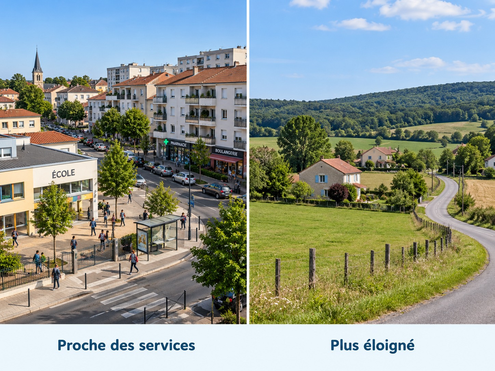

J’observe
Je constate d’abord ce que montre le document : bâtiments, routes, commerces, relief ou services.
🎯 Je sais utiliser des documents pour proposer une explication simple à une différence de peuplement.

Visuels photographiques reconstitués pour comparer deux types de paysages : ce ne sont pas des photographies documentaires de lieux identifiés.
Je constate d’abord ce que montre le document : bâtiments, routes, commerces, relief ou services.
Les emplois, les transports, les écoles et les services peuvent attirer des habitants.
Une montagne, des difficultés de transport ou l’éloignement des services peuvent contribuer à un peuplement moins important. Une explication doit s’appuyer sur des indices.